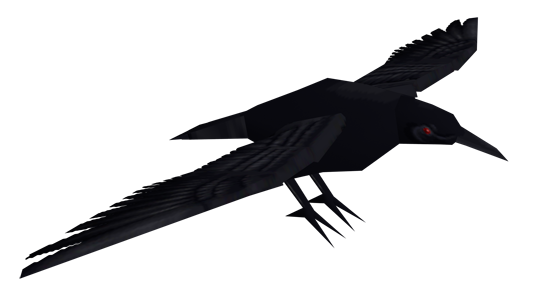

|
 |
|
| Información general | |
|---|---|
| Nombre | Cuervos |
| Base | Cuervo |
| Tipo | Infección secundaria causada por el virus T |
| Altura | Variable |
| Fuente: Resident Evil Wiki | |
Descripción
Los Cuervos son criaturas mutantes, enemigos muy conocidos en la saga Resident Evil, aunque en los los primeros títulos tienen apariciones espontáneas.
Se trata de aves que fueron infectadas por el virus-T tras tener contacto con un cadáver infectado. En general no representan una amenaza, excepto cuando te encuentras en estado critico y eres atacado por ellos.
Historia
Después del incidente de la Mansión causado por James Marcus en la región de las Montañas Arklay, muchos cuervos se infectaron con el virus-T después de consumir animales infectados más pequeños. A diferencia de otros animales infectados por el virus-T, los cuervos no mostraron signos visibles de infección, aparte de su mayor tamaño. Sin embargo, si se veían amenazados, atacarían a sus presas en una bandada. De lo contrario, eran inofensivos.
Fue a través de los cuervos que el miembro del equipo Bravo de S.T.A.R.S. , Forest Speyer, se infectó con el virus-T.
Los cuervos de Raccoon City eran tan peligrosos que sólo uno de ellos logró derribar a Ed, un mercenario entrenado de la U.B.C.S.
Cuervos no infectados
Durante su búsqueda de Ashley Graham en Europa, Leon S. Kennedy se encontró con cuervos normales y no infectados de forma regular, por lo que no representaban amenaza alguna. Estos cuervos, además, tenían la tendencia a recoger objetos brillantes, robando pesetas; algunos incluso robaron granadas de mano.
Los agentes de la B.S.A.A. , Chris Redfield y Sheva Alomar, observaron que una bandada de cuervos se alimentaba de un animal muerto poco antes de que la pareja se encontrara con un grupo de Majini. Leon S. Kennedy y Helena Harper también encuentran varios cuervos en toda la Universidad Ivy en Tall Oaks.
Parker Luciani y Jill Valentine también encontraron cuervos regulares mientras investigaban sobre Globsters. La ubicación más notable de estos cuervos es en Resident Evil 4 , mientras que una gran bandada vuela sin cesar sobre la iglesia en la que se encuentra Ashley.
Los cuervos no infectados también se pueden encontrar en Resident Evil: Revelations 2 , donde en uno de los episodios, matarlos es necesario para ganar una de las medallas.
Ethan Winters también encuentra cuervos no infectados al explorar el exterior de la residencia Baker en Resident Evil 7: Biohazard.
Biología
Físicamente, los cuervos infectados con virus-T no tienen ningún cambio drástico, sin embargo, si varían bastante su comportamiento. Los cuervos encontrados en el Laboratorio Arklay y su propiedad asociada eran bastante reservados, se mantenían a distancia mientras los humanos pasaban. Estos cuervos, generalmente, sólo atacan cuando son molestados por ruidos fuertes, como disparos. Correr en el cementerio también fue suficiente como para provocar un ataque.
En el Centro de Formación de Umbrella, no muy lejos del laboratorio, una bandada de cuervos atacó a Rebecca Chambers y Billy Coen al romper las ventanas de una habitación para alcanzarlos.
Como enfrentarlos
Los cuervos son los enemigos más fáciles de matar, dado que, sólo caerán de un tiro. Sin embargo, son difíciles de abatir cuando están en el aire. Su única forma de ataque es volar hacia la cabeza de una víctima y picotearla repetidamente hasta que colapsen. Los cuervos generalmente mueren con un disparo de cualquier arma en la mayoría de los juegos. En Resident Evil 4 , un jugador puede eliminar un gran grupo de cuervos con granadas de mano, y disparos individuales de la mayoría de las armas; sin embargo, a medida que el jugador avance en el juego, necesitará más potencia de fuego (y disparos) para matar cuervos.
Curiosidades
- En los primeros títulos de la saga, siempre aparecen en lugares tensos y asustan al jugador.
- Tienen un papel importante en la película Biohazard 4D Executer, puesto que, uno de los cuervos transporta el Virus Ejecutor.
- Si bien no aparecen en Resident Evil: Operation Raccoon City, se puede escuchar una gran bandada de ellos en la Comisaría de Policía, directamente detrás de las vidrieras del segundo piso del vestíbulo principal.
- El traje alternativo de Leon en The Mercenaries de Resident Evil 6, lleva un cuervo en su hombro.
- En Resident Evil 7: Biohazard, se pueden ver varios cuervos a las afueras de la casa de invitados Baker. También se pueden ver algunos cuervos muertos en el suelo.
- En uno de los diseños de Resident Evil 3 (remake) se puede ver a un grupo de cuervos alimentarse de un cadáver, aunque estos enemigos no están presentes físicamente en dicho juego.